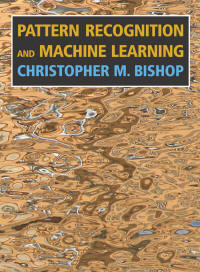

5MB20 Adaptive Information Processing
2014/15 Course Web Page
Course Description
Signal processing is primarily concerned with filtering, smoothing and prediction of time-ordered sequences. Information processing extends this application terrain to such (seemingly) varied areas as pattern classification, language processing, bio-informatics, error-correcting coding and database searching, just to name a few. In this course, using fundamental concepts of probability and information theory, we present an introduction to the design of such information processing systems. This course, which can also be taken as an Introduction to Machine Learning, is structured in two parts:Part 1: Linear Gaussian Models and the EM Algorithm
First, we present the fundamentals of machine learning from a (Bayesian) probability theory perspective. A classic machine learning task is to determine good estimates for the parameters of a given model structure from a set of observed data. We introduce Maximum Likelihood (ML) estimation as an effective method to estimate model parameters. It turns out that for an important class of models, the Linear Gaussian Models, ML estimation problems can be solved using the Expectation-Maximization (EM) algorithm. We derive ML estimation methods and discover the connections for many Linear Gaussian Models, including Gaussian mixture models, Kalman filters, hidden Markov models, principal and independent component analysis circuits and neural networks.Part 2: Model Complexity Control and the MDL Principle
If we assume more than one possible model then we can find a good estimate for the parameters for each class. However, we still have to select a good class. In part 2, the notion of 'Stochastic Complexity' will be developed and the Minimum Description Length (MDL) principle will be used to select an appropriate model.When
In the 2014/15 academic year, this class is taught in the 2nd quarter, starting on 10-Nov-2014. We meet in Mondays and Wednesdays, at alternating frequencies of 4 hours and 2 hours per week. Please check the TUE information site for more detailed information on meeting times and location.Instructors
Dr.ir. Tjalling J. Tjalkens and prof.dr.ir. Bert de Vries. Send us an email or drop by if you want more information about the class.Prerequisites
Mathematical maturity equivalent to undergraduate engineering program. Some matlab programming skills is helpful.Material
 We will use the following text book:Christopher M.
Bishop, Pattern
Recognition
and Machine Learning. Springer, 2006.
Try to get the book before classes start. Next to the reading assignments in the book, further material consists of lecture notes (slides) and exercises, which will be made available through this website. You're strongly advised to download the slides from this website and take them with you to the class in order to add your personal comments.
In the 2014/15 academic year, there will be written exams on 22-January 2015 and (2nd date TBD) (see the official TU/e announcement site). You cannot bring notes or books to the exam. Needed formulas are supplied at the exam sheet. To get some extra practice, here are some exercises
- Exercises for part 1 here. And the same exercises for part-1 with solutions.
- Exercises for part 2 here. Some hints are available too.
Furthermore, we have some recent old exams here. This is an excellent preparation for the exam:
- exam of June 24, 2010 and also with solutions.
- exam of April 14, 2011 and also with solutions.
- exam of June 20, 2011 and also with solutions.
Further references
- The following 'cheat sheets' by Sam Roweis are handy when doing the exercises.
Video
The 2007 class meetings were recorded and can be viewed if you have a valid TU/e account. Note however that the 2014 class will change a bit relative to the 2007 class. Talk to us before you plan to follow the class only from video.Course Schedule
Part 1: Linear Gaussian Models and the EM Algorithm
Instructor: Prof.dr.ir. Bert de Vries| Date / Location | Topics | Materials |
|
Mon Nov-10
15:45 - 17:30 IPO-0.98 |
(0) Administrative issues (1) Introduction (2) Prob. theory review (3) Bayesian Machine Learning |
ALL SLIDES;
Bishop pp. (1) 1-4 , (2) 12-20, (3) 21-24 optional reading: Minka2006 - Nuances of prob. theory Bruyninkx2002 - Bayesian probability |
|
Wed Nov-12
10:45 - 12:30 AUD-5 |
(4) Working with Gaussians (5) Density estimation (6) Linear Regression |
Bishop
(4) 85-93, (5) 67-70, 74-76, 93-94, (6) 140-144 matlab demo: demo_classification.m |
|
Mon Nov-17
15:45 - 17:30 IPO-0.98 |
7.1) Generative classification (7.2) Discriminative class. (8) Gaussian mixture models |
Bishop
(7.1) 196-202, (7.2)
203-206, (8) 430-439 optional reading: Minka2005-Discriminative Models matlab demo: demo_gmm.m, circle.m |
|
Mon Nov-24
15:45 - 17:30 IPO-0.98 |
(9) EM algorithm (10.1) Factor Analysis and PCA (10.2) Independent Component Analysis |
Bishop
(9) 55-57, 439-443, 450-455, (10.1) 570-573, 577-580, 584-586, (10.2)
591-592 optional reading: Singh2005 - EM Algorithm |
|
Wed Nov-26
10:45 - 12:30 AUD-5 |
(11.1) Hidden Markov Models (11.2) Kalman Filters |
Bishop (11.1) 605-615, (11.2) 635-641 optional reading: Minka1999 - From HMM to LDS |
|
Mon Dec-1
15:45 - 17:30 IPO-0.98 |
Review | optional: Roweis: Unifying Review Ghahramani - Bayesian Modelling (VIDEO) |
Part 2: Model Complexity Control and the MDL Principle
Instructor: Dr.ir. Tjalling J. Tjalkens| Date / Location | Topics | Materials |
Mon Dec-8
15:45 - 17:30 IPO-0.98 |
Part A: The Bayesian Information Criterion |
Printable version of the slides. The slides as shown during the lectures. Background reading in Bishop is listed in the slides. A summary and explanation of Markov structures is also available. |
| Wed Dec-10
10:45 - 12:30 AUD-5 |
Part A: The Bayesian Information Criterion (continued) | |
Mon Dec-15
15:45 - 17:30 IPO-0.98 |
Part B: Bayesian model estimation and the Context-tree model selection. | |
|
Holiday break (22, 24 and 29 Dec)
|
||
Mon Jan-5
15:45 - 17:30 IPO-0.98 |
Part B: Bayesian model estimation and the Context-tree model selection (continued). | |
Wed Jan-7 10:45 - 12:30 AUD-5 |
Part C: Descriptive complexity Wrap-up. |
|
Mon Jan-12
15:45 - 17:30 IPO-0.98 |
Part C: Descriptive complexity (continued) Wrap-up. |
|